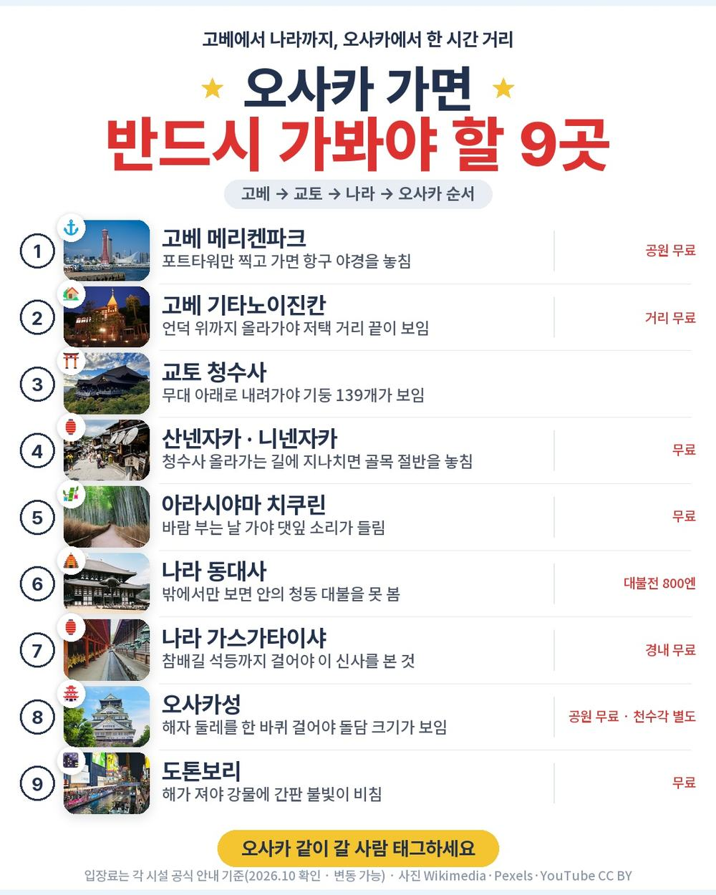
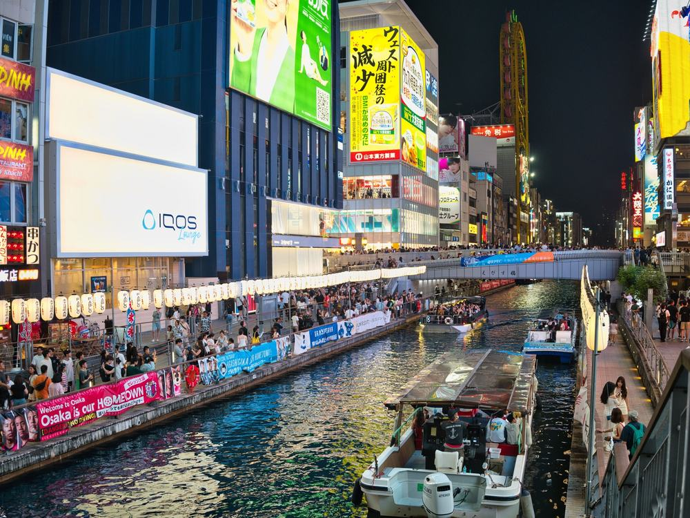
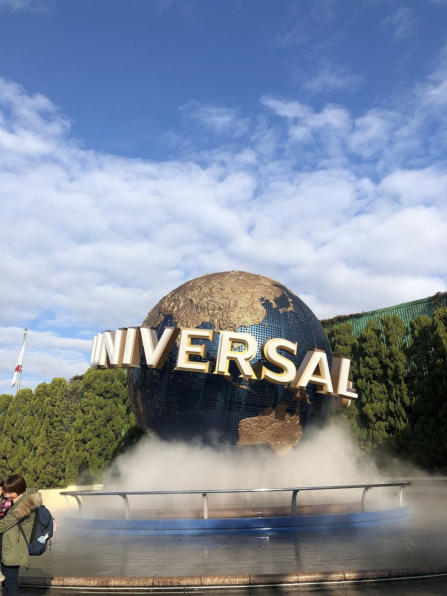
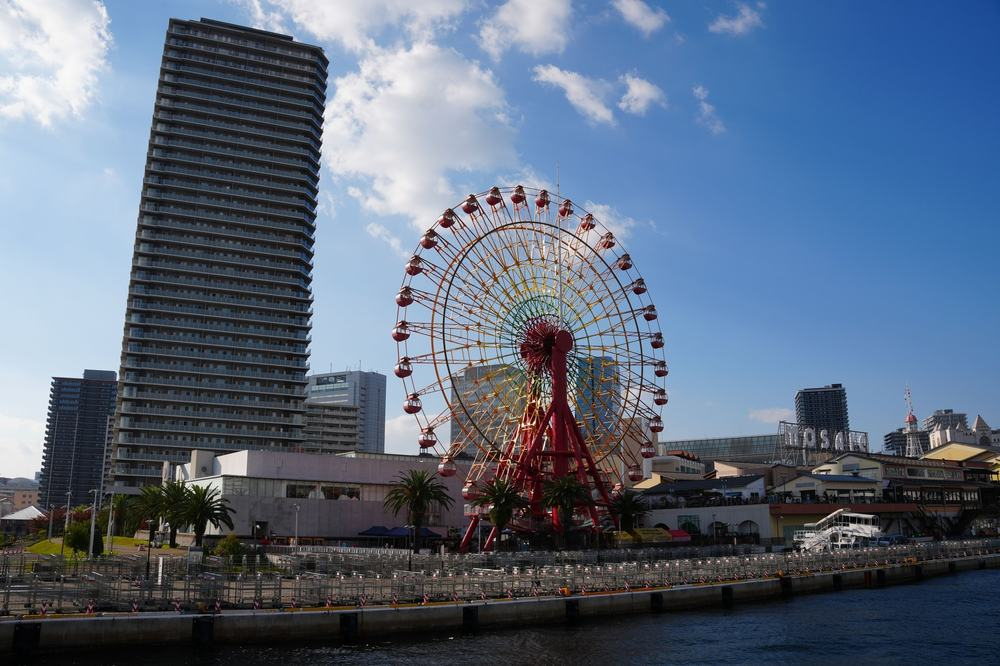
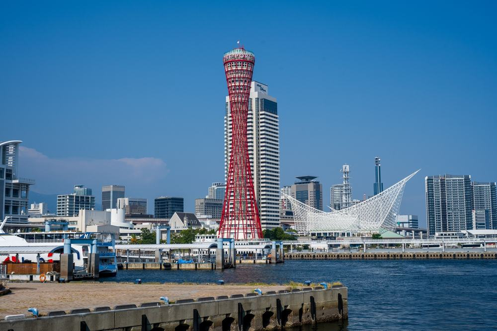
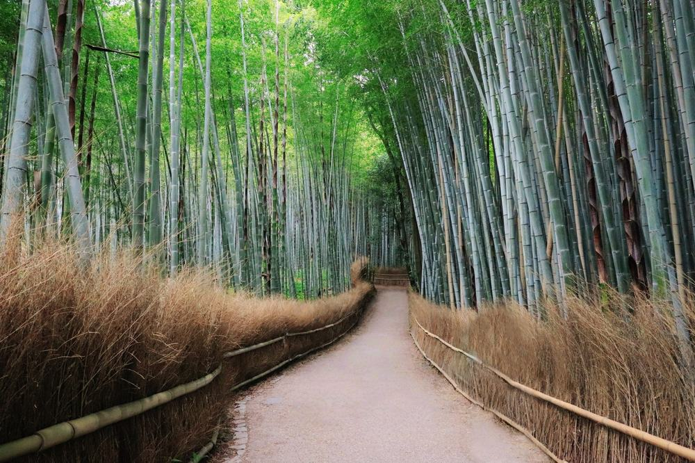
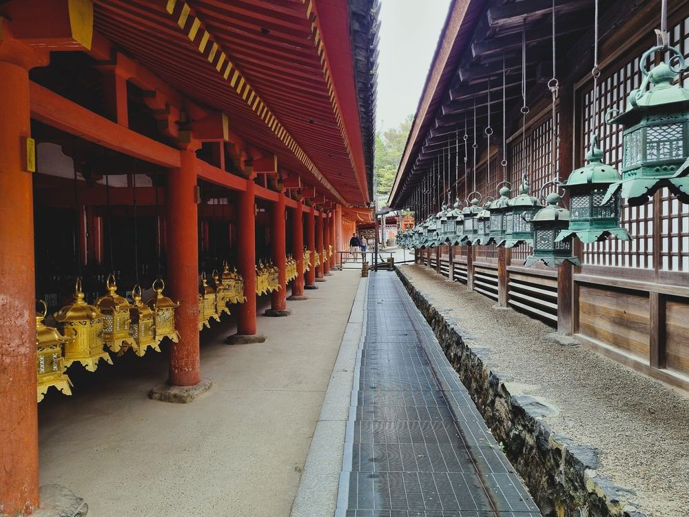
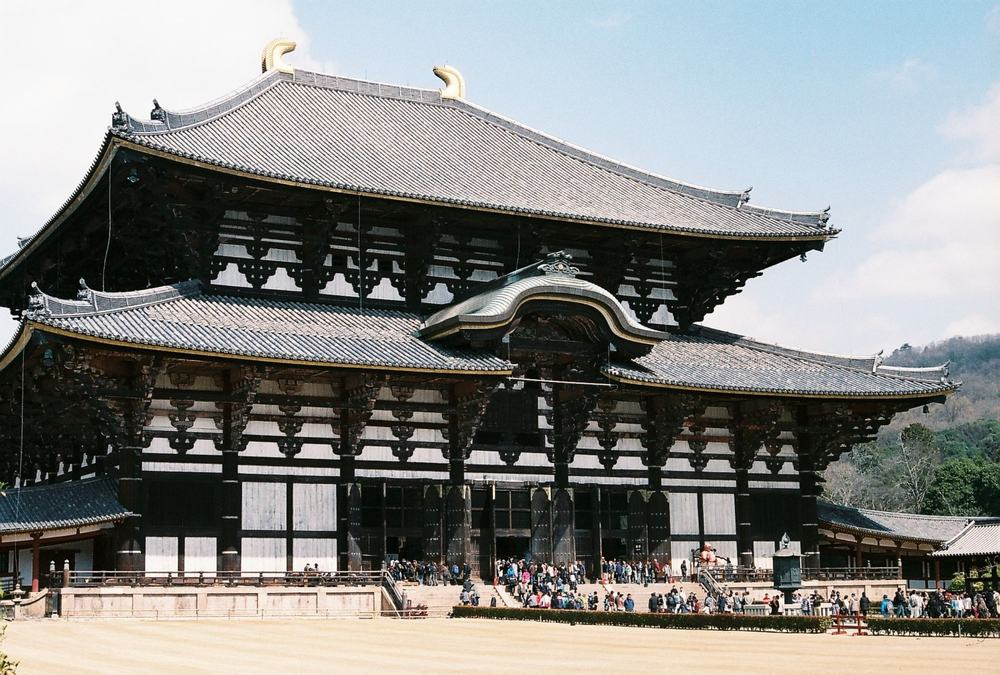

참좋은여행 오사카 패키지 여행 114만 9천원, 추가금 진짜 없을까?

가을에 부모님 모시고 오사카를 알아보다가, 상품마다 "가이드 경비 별도", "자유식 3회" 같은 말이 꼭 붙어 있어서 실제로 얼마가 드는지 계산이 안 됐음.
그러다 참좋은여행 상품이 걸림. 원문 불포함사항 칸에 "불포함사항없음"이라고 딱 적혀 있음. 가이드 경비 4,000엔과 팁까지 상품가에 들어 있다는 뜻임. 게다가 같은 호텔에서 3연박임.
결론 — 추천. 고베·교토·나라·오사카를 4일에 다 돌고, 현지에서 따로 걷는 돈이 없음. 다만 청수사 오르막·돌계단이 힘든 분, 새벽 공항 아침 비행기가 부담인 분, 오사카 한 도시만 진득하게 보고 싶은 분은 아님.
정말 추가금이 0원인지, 114만 9천원이 그만한 값인지 궁금해서 원문을 뜯어봤음.
| 항목 | 내용 |
|---|---|
| 가격 | 1인 1,149,000원 (2인 1실 기준 · 10월 출발) |
| 여행사 | 참좋은여행 |
| 항공 | 진에어 직항 · 인천 아침 출발 → 간사이 오전 도착 / 귀국은 오후 비행기 |
| 숙소 | 오사카 히노데 호텔 3연박 (난바 · 대욕장 · 트윈룸) |
| 일정 | 3박 4일 · 전용 버스 · 한국어 가이드 · 식사 7회 |
| 가는 곳 | 고베 · 교토 청수사 · 아라시야마 · 나라 동대사 · 가스가타이샤 · 오사카성 · 도톤보리 |
▶ 내 출발일 오늘 기준 요금 확인 (제휴 링크 · 예약 시 수수료를 받으며 가격은 같습니다)
| 순서 | 다루는 것 | 한 줄 결론 |
|---|---|---|
| 1 | 구성 뜯어보기 | 경비·팁 포함, 필수 추가금 없음 |
| 2 | 일정 살펴보기 | 2일차에 걷는 게 몰려 있음 |
| 3 | 자유여행 VS 패키지 | 직접 짜면 102만원 | 12만원 남짓으로 버스·가이드·특식을 맡김 |
1. 구성 뜯어보기
요약 — 항공·호텔 3연박·식사 7회(특식 4번)·입장료·가이드 경비 4,000엔·팁·보험이 다 들어 있음. 필수 추가금이 없고, 쇼핑은 1회, 선택관광은 USJ 하나임.
1-1. 114만 9천원에 들어 있는 것

포함 항목을 원문에서 그대로 옮기면 이럼.
- 왕복 항공권 + 유류할증료 + 세금
- 오사카 히노데 호텔 3박 (2인 1실)
- 식사 7회 — 그중 현지식 4번이 전부 특식
- 일정표에 적힌 관광지 입장료
- 기사·가이드 경비 4,000엔 · 팁
- 여행자보험
특식 네 번은 와규 스키야키 정식, 장어덮밥, 창코나베 정식, 가마메시임. 자유식이 두 번 있는데 자유식비 총 2,000엔을 줌.
특전도 따로 있음. 교토 명물 야츠하시 1인 1개, 110V 어댑터 방마다 1개.
출발일별 요금 확인하기
https://naver.me/GB3HGWkM
1-2. 호텔이 이 상품의 핵심임

세 밤 다 오사카 히노데 호텔임. 에비스초역에서 걸어서 1분이고, 18층 옥상에 시내 야경 테라스가 있음.
진짜 자랑은 밤임. 원문에 저녁마다 야식 라멘과 맥주·하이볼·아이스크림이 무료라고 적혀 있음. 대욕장도 있어서 온천욕을 할 수 있음.
3연박이라 짐을 한 번만 풀면 됨. 매일 도시를 옮기는 상품이면 아침마다 캐리어 싸는 게 일인데, 그게 없음.
1-3. 쇼핑과 선택관광

쇼핑은 1회, 현지 면세점 약 40분임. 사는 건 자유.
선택관광은 2일차 유니버설 스튜디오 재팬 하나임. 1인 80,000원이고 입장권·왕복 송영·석식 1,000엔이 들어 있음. 다만 점심은 본인 부담, 가이드는 같이 안 가고, 익스프레스권은 대신 사 주지 않음. 안 고르면 원래대로 교토를 돎.
1-4. 현장에서 더 낼 돈
| 항목 | 금액 | 비고 |
|---|---|---|
| 가이드·기사 경비 | 0원 | 1인 4,000엔 상품가에 포함 |
| 팁 | 0원 | 포함 |
| 자유식 2회 | 자유식비 넘는 만큼 | 1인 2,000엔 지급 |
| 선택관광 | 고르면 160,000원 | USJ 1인 8만원 · 안 고르면 0원 |
| 싱글룸 쓰면 | 140,000원 | 1인 여행 시 |
| 합계 (2인) | 필수 0원 | 상품가 229만 8천원 그대로 · USJ 고르면 245만 8천원 |
한 사람으로 치면 114만 9천원 그대로임.
1절 자주 나오는 질문
Q. 진짜 현지에서 내는 돈이 없나요?
A. 원문 불포함사항이 "불포함사항없음"이고, 포함사항에 "기사/가이드 경비 4천엔"이 적혀 있음. 개인 간식·쇼핑 말고 반드시 내는 돈은 없음.
Q. 출발이 확정된 상품인가요?
A. 상품명에는 "출발확정"이 붙어 있지만 원문 출발 상태는 확정이 아님. 최소 15명이 모여야 떠나는 상품이라 예약할 때 물어보는 게 좋음.
Q. 오사카성 천수각 안에도 들어가나요?
A. 원문 안에서 표기가 엇갈림. 일정표에는 "천수각포함", 관광 항목 설명에는 "천수각 불포함"으로 적혀 있음. 천수각이 꼭 보고 싶으면 예약 때 확인하는 게 좋음.
2. 일정 살펴보기
요약 — 1일차 고베, 2일차 교토 청수사·아라시야마, 3일차 나라·오사카성·도톤보리, 4일차 오전 공항. 걷는 게 2일차에 몰려 있음.
2-1. 하루하루 어디를 가나

| 일차 | 가는 곳 | 식사 | 숙소 |
|---|---|---|---|
| DAY 1 | 인천 아침 출발 → 간사이 → 고베 하버랜드·모자이크 → 메리켄파크 → 기타노이진칸 → 오사카 | 중 자유식 · 석 현지식 | 히노데 호텔 |
| DAY 2 | 교토 청수사 · 산넨자카·니넨자카 → 아라시야마(치쿠린·도게츠교·노노미야 신사) → 오사카 | 조 호텔식 · 중 현지식 · 석 자유식 | 히노데 호텔 |
| DAY 3 | 나라 동대사 · 사슴공원 · 가스가타이샤 → 오사카성 → 신사이바시·도톤보리 | 조 호텔식 · 중·석 현지식 | 히노데 호텔 |
| DAY 4 | 호텔 조식 → 간사이 → 오후 인천 도착 | 조 호텔식 | — |
| 일차 | 버스 이동 | 걷기 | 포함 식사 |
|---|---|---|---|
| DAY 1 | 약 2시간 | 보통 | 중 자유식 · 석 현지식 |
| DAY 2 | 약 2.5시간 | 많음 | 조 호텔식 · 중 현지식 · 석 자유식 |
| DAY 3 | 약 2시간 | 보통 | 조 호텔식 · 중 현지식 · 석 현지식 |
| DAY 4 | 약 0.8시간 | 적음 | 조 호텔식 |
| 합계 | 약 7.3시간 | - | 9끼 (현지식 4 · 호텔식 3 · 자유식 2) |
요약 — 버스 이동은 4일 동안 약 7.3시간임. 포함 식사 7회에 자유식 2회(자유식비 지급)를 더하면 9끼이고, 가장 많이 걷는 날은 DAY 2임.
2-2. 첫날부터 고베

아침 비행기라 오전에 간사이에 내리고, 오사카를 거치지 않고 바로 고베로 감. 버스로 한 시간쯤임.
하버랜드 모자이크에서 점심을 고르고(자유식), 메리켄파크를 걸은 뒤 언덕 위 기타노이진칸으로 올라감. 옛 외국인 주택이 모인 거리라 일본 안의 작은 유럽 같은 분위기임. 저녁에 오사카 호텔로 들어감.
2-3. 2일차가 제일 바쁜 날

교토 청수사는 참배길이 오르막이고, 내려오는 산넨자카·니넨자카가 돌계단 골목임. 원문에 산넨자카 돌계단이 46개라고 적혀 있음. 무릎이 불편하시면 이날이 제일 고됨.
대신 오후 아라시야마는 전부 평지임. 대나무숲 치쿠린, 노노미야 신사, 도게츠교가 걸어서 이어짐. 저녁은 자유식이고 자유식비가 나옴.
2-4. 3일차는 나라와 오사카

동대사 대불전은 높이 50m, 나무로 지은 건물 중 세계에서 제일 큼. 사슴공원을 지나 숲길로 들어가면 가스가타이샤이고, 참배길 양옆으로 석등이 늘어서 있음.
오후엔 오사카성, 저녁은 신사이바시 아케이드를 지나 도톤보리. 호텔이 같은 난바 쪽이라 늦게까지 보고 들어가기 편함.
2절 자주 나오는 질문
Q. 많이 걷나요?
A. 2일차가 제일 많음. 청수사 오르막과 산넨자카 돌계단이 그날에 몰려 있음. 아라시야마·나라·오사카성은 평지 위주임.
Q. 비행기는 몇 시인가요?
A. 진에어 직항이고 아침에 인천에서 떠서 오전에 간사이에 내림. 귀국은 4일차 오후 비행기임. 정확한 시각은 상품 페이지 기준으로 확인하는 게 좋음.
Q. 10월 말 오사카 날씨는 어떤가요?
A. 일본 기상청 평년값으로 10월 하순 낮 최고 기온이 20도 안팎임. 아침저녁은 쌀쌀하니 얇은 겉옷 하나는 챙기는 게 좋음.
3. 자유여행 VS 패키지 | 직접 짜면 102만원
요약 — 같은 일정을 직접 짜면 1인 102만원쯤 듦. 차이는 12만원 남짓이고, 그 값으로 고베·교토·나라를 오가는 전용 버스와 가이드, 특식 예약을 맡기는 셈임.
3-1. 같은 일정을 직접 짜면

같은 일정을 혼자 짠다고 치고 항목별로 계산해 봄. 10월 말 기준, 2인 1실 1인분임. 환율은 100엔 약 930원으로 잡았음. 항공 말고는 추정치라 근거 열에 적어 둠.
| 항목 | 금액 | 근거 |
|---|---|---|
| 인천–간사이 왕복 항공 | 325,600원 | 패키지와 같은 출발일 직항 (2026-10-03 마이리얼트립 조회) |
| 난바 대욕장 호텔 3박 | 335,000원 | 2인 1실 1박 약 2만 4천엔의 1인분 × 3 (추정) |
| 식사 7회 (특식 4 · 조식 3) | 200,000원 | 스키야키·장어덮밥·창코나베·가마메시 + 조식 (추정) |
| 자유식비 2회분 | 19,000원 | 패키지가 주는 2,000엔 |
| 밤 야식 라멘·맥주 3번 | 42,000원 | 1인 약 1,500엔 × 3 (추정) |
| 공항 ↔ 시내 왕복 | 27,000원 | 난카이 등 편도 약 1,450엔 |
| 고베·교토·나라 이동 | 47,000원 | 사철·JR·버스 3일치 실비 (추정) |
| 입장료 (청수사·동대사 대불전 등) | 12,000원 | 유료 구간 합 (추정) |
| 여행자보험 | 15,000원 | 4일 기준 |
| 가이드 | — | 자유여행은 없음 |
| 합계 | 약 1,022,600원 |
직접 짜실 분은 이 날짜 항공권부터 보세요 — https://myrealt.rip/tqbC80 (마이리얼트립 제휴 링크)
패키지는 1,149,000원이고 현지 추가 경비가 없음.
3-2. 그래서 뭐가 다른가
차이는 12만원 남짓임. 그런데 그 12만원에 표에 못 넣은 게 들어 있음.
- 간사이공항 → 고베 → 오사카, 오사카 → 교토 → 아라시야마 → 오사카, 오사카 → 나라 → 오사카
- 자유여행이면 이 사이사이가 전부 사철·JR 환승임
- 특식 네 번은 인기 가게라 예약을 따로 잡아야 함
패키지는 이 전부가 전용 버스 한 대로 붙음. 여기에 가이드가 붙음. 자유여행 계산표에 가이드 행이 비어 있는 게 그 뜻임 — 0원이 아니라 살 수 없는 것임.
3-3. 어느 쪽이 맞나
| 자유여행이 맞음 | 패키지가 맞음 |
|---|---|
| 오사카 시내만 천천히 볼 것임 | 고베·교토·나라까지 4일에 다 볼 것임 |
| 일본어나 구글맵이 편함 | 환승과 시간표가 부담 |
| 식당을 직접 고르고 싶음 | 특식 예약까지 맡기고 싶음 |
| 아침 비행기가 싫음 | 첫날 오전부터 관광하고 싶음 |
3절 자주 나오는 질문
Q. 자유여행이 더 싸지 않나요?
A. 계산해 보면 자유여행이 약 102만원, 패키지가 114만 9천원임. 12만원 남짓 차이인데, 그 안에 전용 버스·가이드·특식 예약이 들어 있음. 연휴가 끼면 항공·호텔이 올라 차이가 더 줄어듦.
Q. 혼자 가도 되나요?
A. 됨. 다만 싱글룸 사용료 14만원이 붙음.
Q. 아이와 같이 가도 되나요?
A. 원문 요금은 소아(만 12세 미만)도 성인과 같은 1,149,000원이고, 유아(24개월 미만)는 100,000원임.
마무리
정리하면 이럼.
추천함. 114만 9천원에 인천 직항, 난바 온천 호텔 3연박(밤마다 라멘·맥주 무료), 고베·교토·나라·오사카, 그리고 특식 네 번이 들어 있음. 가이드 경비와 팁까지 포함이라 현지에서 반드시 더 내는 돈이 없음.
이런 분은 고르면 안 됨. 청수사 오르막·돌계단이 힘든 분, 새벽 공항 아침 비행기가 부담인 분, 오사카 한 도시만 진득하게 보고 싶은 분.
걸리는 점이 있긴 한데 상품 흠이라기보다 맞는 사람과 안 맞는 사람을 가르는 조건에 가까움.
오늘 기준 출발일별 요금 보기
https://naver.me/GB3HGWkM
함께 보면 좋은 글
노랑풍선 후쿠오카 패키지 여행 79만 9천원, 온천에 대게 무제한까지 될까?
https://blog.naver.com/robotnady10/224428993076
하나투어 방콕 파타야 패키지 여행 49만 9천원, 추가금 진짜 없을까?
https://blog.naver.com/robotnady10/224427819524
이 글에는 네이버·마이리얼트립 제휴 링크가 포함되어 있으며, 링크를 통해 예약하시면 일정 수수료를 받습니다. 가격은 동일합니다. 가격과 구성은 2026년 10월 3일 확인 기준이며 출발일에 따라 달라질 수 있습니다.
▶ 이 상품, 영상으로 보기 (유튜브)
▶ 오사카 패키지 오늘 값 나란히 비교
사진 출처 (저작자 · 라이선스):
Universal Studios Japan entrance — CC BY-SA 4.0 (Wikimedia Commons) 원본

그 밖의 사진: Pexels
쇼츠·클립 영상과 사진:
Pexels 원본
Pexels 원본
Bamboo Forest, Arashiyama, Kyoto, Japan, 2016 — Asia Blog (YouTube, CC BY) 원본
Dotonbori 4K: Osaka’s Vibrant Food and Entertainme — Sojourn Diary Japan (YouTube, CC BY) 원본
Shinsaibashi-suji (4793145349) — CC BY 2.0 (Wikimedia Commons) 원본
.jpg){kind=link}
Weathercock House Kobe Kitano Ijinkan 風見鶏の館（旧トーマス住宅） — CC BY 4.0 (Wikimedia Commons) 원본